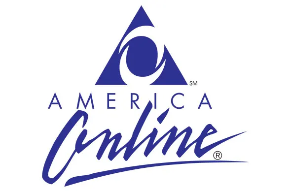

Social Media When I Was A Youngin'
MySpace®
- Launched on August 1, 2003, the site was the first social network to reach a global audience, and had a significant influence on technology, pop culture and music.
- From 2005 to 2009, Myspace was the largest social networking site in the world
- Playing a critical role in the early growth of companies, like YouTube, and creating a developer platform that launched the successes of Zynga, PhotoBucket, and Rock You, MySpace will be a lasting memory of the early Internet days.
- Once the biggest social media site and acquired for $580 million, MySpace fell off the top because of poor management and good competitors.
Bebo®
- Bebo was an American social networking website that originally operated from 2005 until its bankruptcy in 2013, and relaunched in February 2021.
- It was founded by Michael Birch and Xochi Birch, a married couple who loved to blog; “B log E arly, B log, O ften.”
- The site relaunched several times after its bankruptcy with a number of short-lived offerings, including instant messaging and video streaming, until its acquisition by Amazon in July 2019 when it was shut down.
- It was announced in January 2021 that it would be returning as a new social media site the month after. By May 2022, it had been once again shut down, without ever having left beta testing.
- If you visit the site now, it only displays a heartfelt message from the creator. “We tried our best to resurrect Bebo. To create something new and fresh. But perhaps it wasn't new or fresh enough. This has been a fun project built during the pandemic, but sadly it must be sunsetted. We are grateful to everyone who joined us on this journey. Your support is greatly appreciated. Will Bebo rise again? Who knows. It has now lived four times, been sold twice. Hmm. It's been emotional.” Michael Birch
Why 'Bebo' is important to me?
When I was in Middle Shool, the most popular site to have a profile on was definitely Bebo. MySpace did reign supreme along side, but Bebo drew in more of the international crowd, specifically the UK. Plus, MySpace had a song that would play when you entered a profile; Bebo had a profile video that would play and Widgets!
AOL®

- Aol., originally known as America Online,is an American web portal and online service provider based in New York City.
- It is a brand marketed by the current Yahoo Inc.
- The company grew to become the largest online service, displacing established players like CompuServe and The Source.
- By 1995, there were about three million active users.
- AOL was one of the early pioneers of the Internet in the mid-1990s, and the most recognized brand on the web in the United States. It originally provided a dial-up service to millions of Americans, pioneered instant messaging, and in 1993 began adding internet access.
- The popularity rapidly shrank thereafter, partly due to the decline of dial-up and rise of broadband.
- Eventually, the company was spun off from Time Warner in 2009.
- June 23, 2015,Verizon Communications bought AOL was acquired for $4.4 billion.
- On May 3, 2021, Verizon announced it would sell Yahoo and AOL to private equity firm Apollo Global Management for $5 billion.